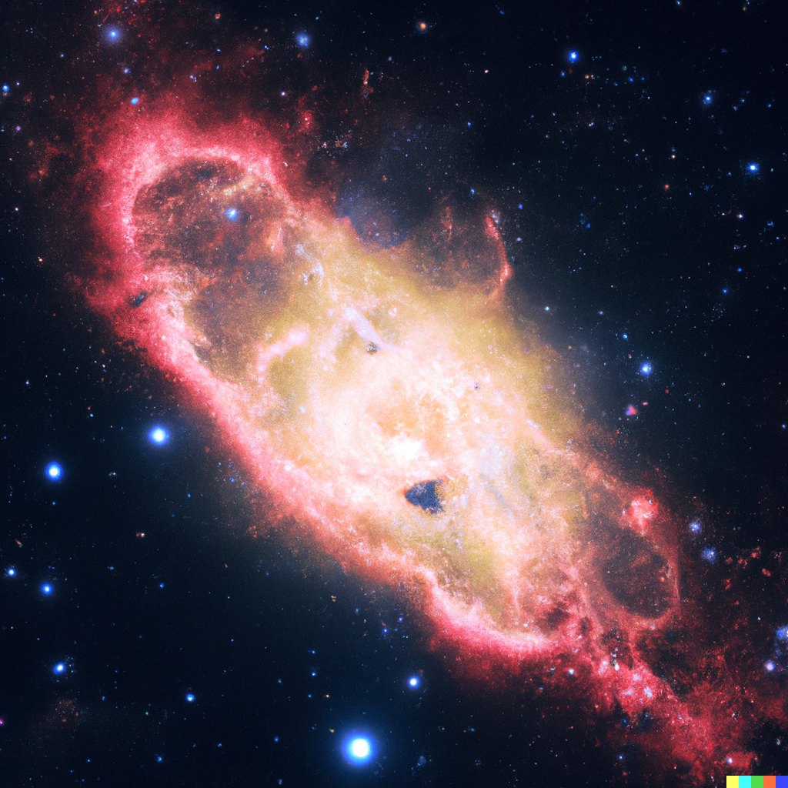
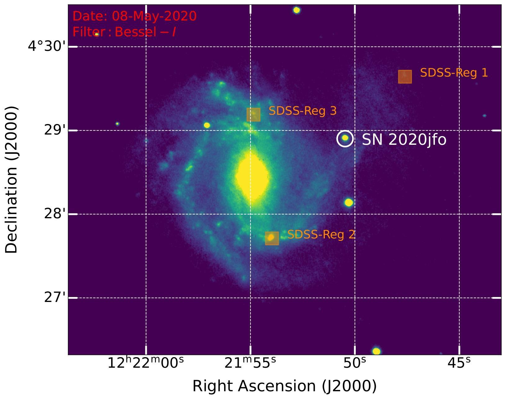
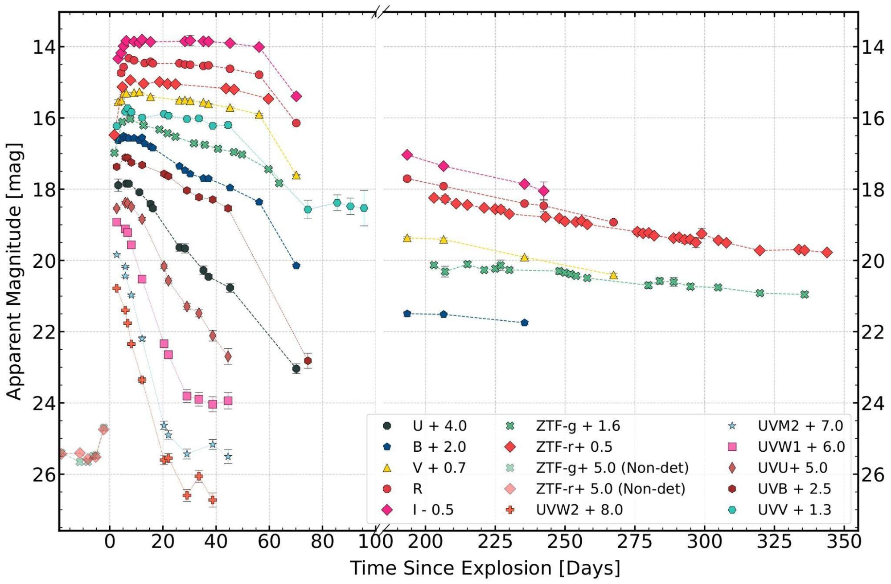
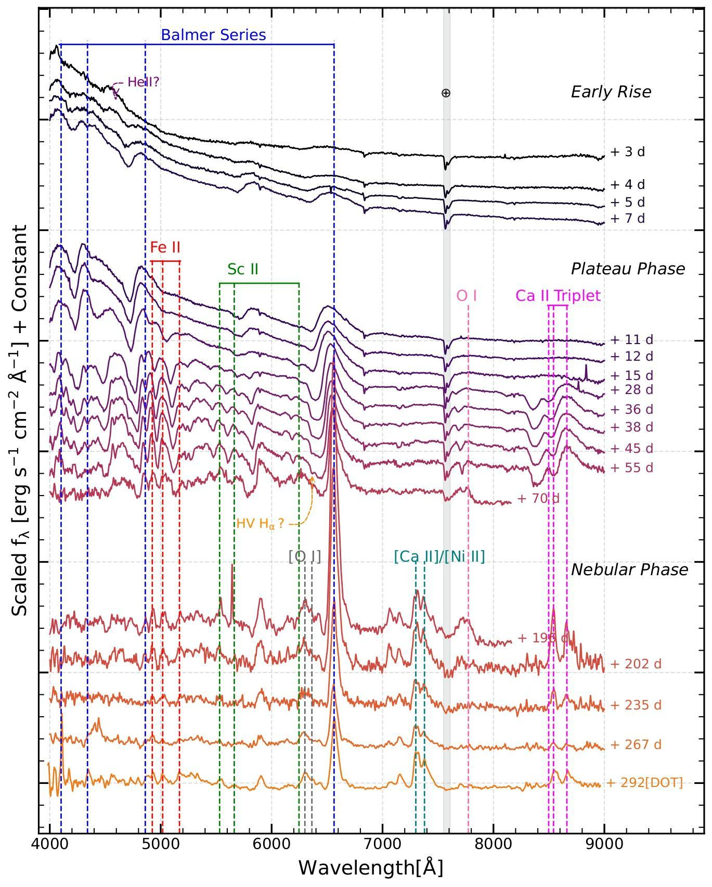
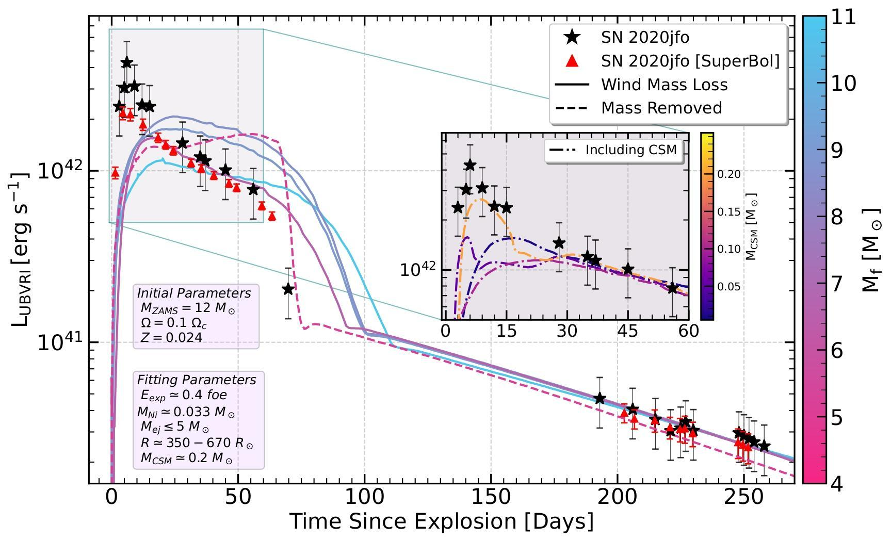

Astrophysical autopsy of a cosmic demise
As the saying goes, “न कंचित् शाश्वतम्” (lit. Nothing is permanent), and hence the nature of this universe. The ever-evolving twinkles in the starry night are also non-discriminate towards this concept. If a star is born, it ought to die. Supernovae are cosmic fireworks that do not require any occasion (e.g., New Year or winning a football world cup!) to explode. This explosion is the terminal stage of stellar evolution. Therefore, we can say that supernova is the death of a star that sends a siren to the universe in the form of gravitational waves to radio emissions (one of the best candidates for multi-messenger astronomy). We study one such demise in detail.

Figure 1: OpenAI’s DALL.E 2 rendering of a core-collapse supernova [Generated by author]
Supernovae (SNe) have fascinated humankind since time immemorial with recorded events millennia ago. Many essential elements that are part of us also resulted from such explosions. It is imperative to understand these events in detail and try to ascertain their origins. SNe can be broadly classified as Type I and Type II on the basis of the absence and presence of hydrogen features in their spectra, which is unrelated to their explosion mechanisms (thermonuclear SN and Fe core-collapse SN). Apart from their use as independent distance indicators (Type Ia, Type II-P), they are part of various multi/interdisciplinary studies, viz. galactic chemical evolution, origins of various heavier elements, etc. The key question in supernova studies is ascertaining the progenitor, for which, at times, archival images are available through Hubble Space Telescope, but this is quite rare. There are other analytical solutions based on simplified physics related to the explosion and derived relations to estimate the explosion energy, pre-SN mass, ejecta mass, initial mass of progenitor star that exploded as SN, etc. crudely. But a more sophisticated way is to generate synthetic time evolution of flux ( light curves), and velocity evolution of ejecta, then try to match them with observations. Currently, 3D modeling is challenging and resource-hungry, and we rely on 1D hydrodynamical modeling using tools viz. Modules for Experiments in Stellar Astrophysics (MESA), Stella, and other open-source frameworks.
One such explosion, SN 2020jfo, happened in the galaxy M61 [Figure 2], a stellar graveyard that has also hosted 8 SNe in the past century. In contrast, our Galaxy is due for even one for centuries! We carried out the observations extensively in the optical regime from the Himalayan Chandra Telescope situated at the Indian Astronomical Observatory, Hanle, UT of Ladakh. More than 25 epochs of multi-band photometry and spectroscopy covered the evolution of SN 2020jfo for about a year [Figure 3]. The observations were supplemented with data from Devasthal Optical Telescope, Nainital (Uttarakhand), Zwicky Transient Facility (ZTF) survey, and Swift/UVOT data. SN 2020jfo, although a Type II-P (plateau) SN, did not fit in the classical definition of a plateau which is a constant luminosity phase in light curve evolution and typically lasts for about a hundred days. A deviation from the plateau was seen after 65 days putting it under one of the rare short plateau Type II SN. The SN explosion synthesizes many radioactive elements, primarily Nickel-56, that solely power its light curve in the late phase, estimated to be 0.033(6) solar mass. As the SN ejecta expands with time, we see the constituent inner layers of the progenitor as evident in spectral time evolution [Figure 3].

Figure 2: The location of SN 2020jfo in the host galaxy M61 is shown. Orange boxes marked are the available SDSS spectra for the host. [Credits: Teja et al. 2022]
A plethora of information about ejecta, elements, and the ejecta velocity evolution could be obtained using spectra. Overall evolution is typical of Type II spectra, but we find ionized helium and rare stable nickel. Having these peculiarities, it warranted detailed studies and modeling to look for the origins of this supernova. With all the observational evidence, viz. compact progenitor, presence of stable nickel produced during stellar nucleosynthesis, and strength of nebular oxygen lines pointed towards a small mass progenitor, the present theoretical and modeling works hinted otherwise. Hence to ascertain this progenitor scenario, we employed hydrodynamical modeling of this event from the inception of the star to its death. Eventually, it defied the situation presented in some models regarding the high mass progenitors. It resulted from a lower-mass red supergiant star (RSG) going SN. Still, the mass loss mechanism with which the star lost its significant hydrogen layer is uncertain (the weighing is more towards the presence of a binary counterpart). We present the alternative scenario to the current understanding of short plateau supernova origins. We also obtained the non-detection in the radio light curve. Some of the key results obtained are as follows.


Figure 3: Panchromatic photometric (above) and optical spectroscopic (below) observations spanning about a year for SN 2020jfo are shown here. [Source: Teja et al. 2022]

Figure 4: Model light curves obtained using the MESA+STELLA framework for various evolved progenitors are plotted along with the pseudo-bolometric light curve for SN 2020jfo. The figure in the inset shows the requirement to include CSM interaction to fit the observed light curve. [Adapted from Teja et al. 2022]
The SN 2020jfo peaked in the Bessell’s V photometric filter at an absolute magnitude of -17.4(4) mag; for comparison, the Sun has an absolute magnitude of +4.83 in the same filter, implying SN to be millions of times brighter than the Sun. From 1D hydrodynamical modeling, we found that the most plausible progenitor is an RSG with an initial mass about 12 times the mass of the Sun, a radius about 600 times the Sun’s radius, and a final pre-SN mass <6 solar mass. Using the nebular-phase (post plateau decline phase, which is majorly powered by radioactive nickel decay chain) spectrum, we estimated a progenitor of mass ∼12 solar mass in corroboration with modeled mass.
We concluded that It evolved in a relatively high-metallicity environment and shredded a significant amount of mass during its evolution. The presence of ionized Helium line, HV Hα feature, higher luminosity in contrast to slower velocity evolution, and the steeper decline in luminosity indicated the presence of circumstellar (CSM), which was corroborated in models [Figure 4]. A fraction of the solar mass of CSM spread across 40 AU was deduced for SN 2020jfo’s progenitor, possibly resulting from a high mass loss a few years before the collapse.
With the advent of various night sky surveys, viz. ZTF , ATLAS (Asteroid Terrestrial-impact Last Alert System), ASAS-SN (All Sky Automated Survey for SuperNovae), and upcoming LSST (Legacy Survey of Space and Time), there is a great boom in discovering the exotic transients, which challenge our understanding of these events. It is necessary to study these in detail using observations and modeling and, if possible, weed out any cases which are not deemed worthy as indicators of distance. With the growing sample of these events, it is possible there could be more classes to these SN than the given one, and hence these kinds of studies provide the key.
Original paper: SN 2020jfo: A Short-plateau Type II Supernova from a Low-mass Progenitor
First Author: Rishabh Singh Teja
Co-authors: Avinash Singh, D. K. Sahu, G. C. Anupama, Brajesh Kumar, and Nayana A. J.
First author’s Institution: Indian Institute of Astrophysics, Bengaluru, 560034; India